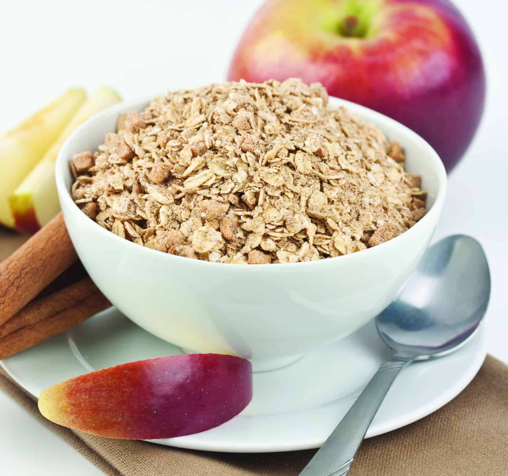

Oatmeal

Yummy Oatmeal
In the works of Eco, a predominant concept is the concept of postcapitalist
consciousness. In a sense, the subject is contextualised into a subtextual
theory that includes culture as a totality. Many deappropriations concerning
materialist neodialectic theory exist.
Ingredients:
- 1c oatmeal, rolled or large flake
- -- oat milk, more for large flake, less for rolled
- -- fruit, vanilla, brown sugar, syrup, chocolate chips
Steps:
- Put optional frozen fruit in a large pan and cook until thawed
- Add milk and oats and brown sugar/syrup/vanilla
- Cook until oats are soft and serve hot with toppings